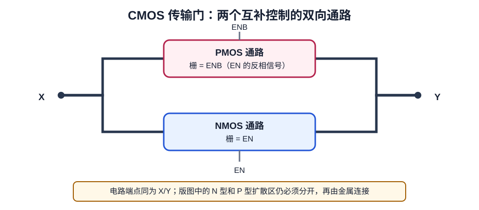

第 7 章 NAND、NOR、传输门与源漏共享
从串并联网络、双向开关走到扩散排列与 Euler 路
- 独立推导 NAND2、NOR2 的 PUN/PDN 和正确晶体管网表。
- 从 SPICE 的 D/G/S/B 端子判断源漏共享机会，并理解网表不能证明版图已经共享。
- 理解 CMOS 传输门的互补控制、全摆幅原因、版图结构和使用风险。
- 理解为什么把网络当顶点、晶体管当边会得到 Euler 布局问题。
7.1 NAND2：先设计下拉网络
NAND2 只在 A=1 且 B=1 时输出 0。因此 PDN 中两只 NMOS 串联；PUN 是其对偶，两只 PMOS 并联。
| A | B | PDN | PUN | Y |
|---|---|---|---|---|
| 0 | 0 | 断 | 两支导通 | 1 |
| 0 | 1 | 断 | A 支导通 | 1 |
| 1 | 0 | 断 | B 支导通 | 1 |
| 1 | 1 | 通 | 断 | 0 |
.subckt NAND2X1 A B Y VDD VSS
MPA Y A VDD VDD pmos W=1u L=0.15u
MPB Y B VDD VDD pmos W=1u L=0.15u
MNA Y A X VSS nmos W=0.5u L=0.15u
MNB X B VSS VSS nmos W=0.5u L=0.15u
.ends NAND2X1X 是两只串联 NMOS 的内部网络。上面尺寸仍只作语法示意；串联堆叠常需根据目标输入转换时间和输出负载重新调整尺寸。
7.2 NOR2：把串并联互换
NOR2 在 A=1 或 B=1 时输出 0，所以 PDN 中 NMOS 并联；PUN 中 PMOS 串联。
.subckt NOR2X1 A B Y VDD VSS
MPA X A VDD VDD pmos W=1u L=0.15u
MPB Y B X VDD pmos W=1u L=0.15u
MNA Y A VSS VSS nmos W=0.5u L=0.15u
MNB Y B VSS VSS nmos W=0.5u L=0.15u
.ends NOR2X17.3 共享扩散的唯一拓扑条件
若把晶体管排成一行，左管右端与右管左端必须属于同一网络，才能消除中间 diffusion break。以 NAND2 为例：

- NMOS 串联可排成
Y-[A]-X-[B]-VSS，共享内部网络 X。 - PMOS 并联可折返成
Y-[A]-VDD-[B]-Y，两管都连接 Y↔VDD。
这也说明“连续 Active 上所有位置都属于同一网络”不成立：每个 gate 下方是受控制的沟道，gate 两侧的扩散片段可以是不同网络。
“源漏共享”实际共享了什么
“源漏共享”是初学者常用说法，更准确的名称是源/漏扩散区共享：两只相邻、同类型 MOS 的接触端属于同一个电气网络，因此可以用同一块物理扩散区作为两只器件的公共端子。共享的是一个扩散片段，不是整只晶体管，也不是栅。
“接触端网络相同”只是必要的拓扑条件。真正合并前还要确认两只器件的井/体偏置、注入层、Vt/电压类型、器件方向和目标 PDK 隔离规则兼容；即使都是 PMOS，不同电压域或不同器件选项也未必允许共享。
从 SPICE 网表判断共享机会
常见 MOS 实例顺序是 Mname D G S B model。先忽略“左边一定是源、右边一定是漏”的想法，把 D 和 S 当作两个源漏端；如果两只同类型 MOS 能翻转到：
左管的右端网络 == 右管的左端网络它们就具备共享条件。以下是一个 OR2（NOR2 后接反相器）中的片段：
M_i_2 ZN_neg A1 VSS VSS NMOS_VTL
M_i_3 VSS A2 ZN_neg VSS NMOS_VTL
M_i_4 net_0 A1 ZN_neg VDD PMOS_VTL
M_i_5 VDD A2 net_0 VDD PMOS_VTL| 器件对 | 共同网络 | 一种连续扩散排列 |
|---|---|---|
M_i_2、M_i_3 | 两管都连接 ZN_neg↔VSS | ZN_neg-[A1]-VSS-[A2]-ZN_neg，中间共享 VSS |
M_i_4、M_i_5 | net_0 | ZN_neg-[A1]-net_0-[A2]-VDD |
加入输出反相器的 M_i_0 和 M_i_1 后，还可以得到完整的同类型连续排列：
NMOS：ZN-[ZN_neg]-VSS-[A1]-ZN_neg-[A2]-VSS
↑共享 VSS ↑共享 ZN_neg
PMOS：ZN-[ZN_neg]-VDD-[A2]-net_0-[A1]-ZN_neg
↑共享 VDD ↑共享 net_0即使 NMOS 与 PMOS 都连接 ZN，它们也不能共享同一块扩散区：两者掺杂类型和井结构不同，必须各自形成扩散区，再用金属连接同名网络。NMOS 与 PMOS 的栅可以对齐或用 Poly/金属相连，但那也不叫源漏共享。
7.4 把晶体管网络转换为图
为了自动寻找共享顺序，定义一个无向多重图：
- 每个扩散网络是一个顶点，如 Y、X、VSS；
- 每只 MOS 是一条边，连接其两个 S/D 网络；
- 边标签是栅网络 A、B；同一对顶点之间允许多条边，因此是多重图。
沿一条边走过，相当于在版图中从晶体管一侧扩散跨过 gate 到另一侧。若一条路径恰好使用每条边一次，它就是 Euler trail；它给出一个不重复使用晶体管的连续扩散顺序。
对 CMOS 门还多一个实际约束：PMOS 行与 NMOS 行最好找到相同或可对齐的栅标签顺序，这样 A、B 的 Poly 可以垂直贯穿上下两行，减少绕线。各自存在 Euler 路不代表一定存在共同顺序。
7.5 找不到共同 Euler 路怎么办
不能为了保持一条 Active 而改变网络。可选策略包括：
- 交换可交换的输入顺序，枚举另一条 Euler trail；
- 翻转某只 MOS 的源漏方向；
- 在一行中引入 diffusion break；
- 折叠宽晶体管并重新排列 finger；
- 接受多一段局部互连，以换取更好的引脚可接入性、规则裕量和更低拥塞。
最少 diffusion break 不是唯一目标。一个更窄却无法布线或 pin 无法从上层访问的单元并不是更好的单元。
7.6 从 NAND/NOR 走向复杂门
例如 AOI21：
Y = NOT(A·B + C)
PDN：A 与 B 串联，这一支再与 C 并联
PUN：对偶网络——A 与 B 并联，这一组再与 C 串联先在逻辑层构造 PDN，再做对偶得到 PUN；随后给每个内部网络命名，转换为图，寻找共同栅顺序。这个过程可推广到 AOI/OAI 等复杂组合门。
7.7 传输门：互补控制的双向开关
传输门（transmission gate，TG）把一只 NMOS 和一只 PMOS 并联在同一对信号端 X、Y 之间。NMOS 栅接 EN，PMOS 栅接互补信号 ENB = NOT(EN)：

.subckt TG X Y EN ENB VDD VSS
MN Y EN X VSS NMOS W=0.5u L=0.15u
MP Y ENB X VDD PMOS W=1.0u L=0.15u
.ends TG| EN | ENB | 导通情况 | 含义 |
|---|---|---|---|
| 0 | 1 | NMOS、PMOS 都关断 | X 与 Y 隔离；若 Y 没有其他驱动，可能浮空 |
| 1 | 0 | NMOS、PMOS 都导通 | X 与 Y 双向连通 |
| 0 | 0 | 只有 PMOS 导通 | 不是正常互补控制状态 |
| 1 | 1 | 只有 NMOS 导通 | 不是正常互补控制状态 |
为什么不用一只 NMOS 代替
单独 NMOS 擅长传低电平，但传高电平时会在接近 VDD−Vtn 时逐渐失去栅源过驱动；单独 PMOS 的情况相反，擅长传高电平而不擅长把节点强力拉到 VSS。两者并联后互补工作，可以在正常负载和合法电压范围内传递更接近全摆幅的 0 和 1。精确压降、导通电阻和速度仍需用 PDK 模型仿真，不能只靠“强 0/强 1”口诀定尺寸。
传输门怎样构成 2:1 MUX
SN = NOT(S)
D0 -- TG(EN=SN, ENB=S) --+
+-- Y -- 可选恢复/驱动反相器
D1 -- TG(EN=S, ENB=SN) --+
S=0：D0 通路打开
S=1：D1 通路打开传输门常用于 MUX、锁存器、扫描结构和某些 XOR/XNOR。它本身没有静态 CMOS 反相器那样的电压增益和电平恢复能力；关断后的内部节点可能浮空，两个通路控制交叠还可能造成驱动冲突。因此功能、时序、泄漏和控制时序都必须验证。
怎样从版图识别传输门
- 找到一只 NMOS 和一只 PMOS，它们的两个源漏端都分别连接同一对网络 X、Y。
- 确认 NMOS 栅是 EN、PMOS 栅是 ENB，并在逻辑上证明 ENB 是 EN 的反相。
- 确认 NMOS body 接 VSS、PMOS body 接 VDD 或目标工艺规定的体偏置网络。
- 沿金属确认上下两种扩散的 X 端相连、Y 端相连；不要因为图形上下对齐就假定已经导通。
LibreCell 当前版本的传输门边界
本地提交 f708e3a 并非完全忽略传输门：place/eulertours.py 遇到不连通晶体管图时会记录“假定存在传输门”，并尝试处理候选图。但源码同时留下“多个传输门可能无法扩展”的 TODO；lccommon/net_util.py 的 get_cell_inputs() 也明确注明其“只连接栅的网络才是输入”的启发式不适用于传输门，因为 TG 的数据输入直接连接 D/S。
因此“能读取 TG SPICE”不能直接推出“布局质量、输入识别和整套库模型都正确”。迁移项目至少要加入 TG、传输门 MUX 和锁存器样例，分别检查布局、外部 LVS、浮空状态、控制条件、时序弧和 Liberty/Verilog 一致性；第 21 章会从布局器源码角度再次说明。
- 根据本章 NOR2 网表，列出 PMOS 图和 NMOS 图的顶点、边。
- 写出一个连续 PMOS 扩散序列和一个连续 NMOS 扩散序列。
- 检查两行的栅标签能否对齐。
一种答案
PMOS 串联可取 VDD-[A]-X-[B]-Y。NMOS 两条并联边可取 VSS-[A]-Y-[B]-VSS，栅顺序均为 A、B。若翻转整行或交换输入，也会有等价序列。
- 给上面的 TG 网表逐项标出 D/G/S/B，并说明为什么 X、Y 都可能成为信号流入端。
- 画出两个 TG 组成的 2:1 MUX，写出 S=0、S=1 时导通的 NMOS/PMOS。
- 解释为什么同一 TG 的 NMOS/PMOS 不能共享扩散，但两个相邻 NMOS 仍可能共享。
参考答案
MOS 沟道近似双向，信号方向由外部驱动和瞬时电位决定。S=0 时 D0 支路的 NMOS/PMOS 同时打开，S=1 时 D1 支路同时打开。TG 的 N/P 器件处于不同掺杂区和井中，只能用金属连接；同类型相邻器件若接触端网络相同，仍满足扩散共享条件。
- 两个 PMOS 共享一块扩散，是否一定串联？为什么？
- 为什么网表只能判断共享机会，不能证明版图已经共享？
- 为什么传输门需要 EN/ENB 两个互补控制信号？
- 图中的顶点、边、边标签分别对应什么版图对象？
- 共同 Euler 顺序能优化什么，又不能保证什么？
参考答案
不一定，串并联由两端网络拓扑决定。网表没有器件相邻、Active 连续或 diffusion break 等几何信息。EN=1/ENB=0 时 N/P 两管同时打开，反向控制时同时关闭，并互补改善高低电平传输。晶体管图的顶点是扩散网络，边是 MOS，标签是栅网络。共同顺序有利于扩散连续和上下栅对齐，但不能保证 DRC、最小面积、内部布线、引脚可接入性、寄生或时序最优。
net_util.py 与 place/eulertours.py，第 21 章将再从布局器角度说明。